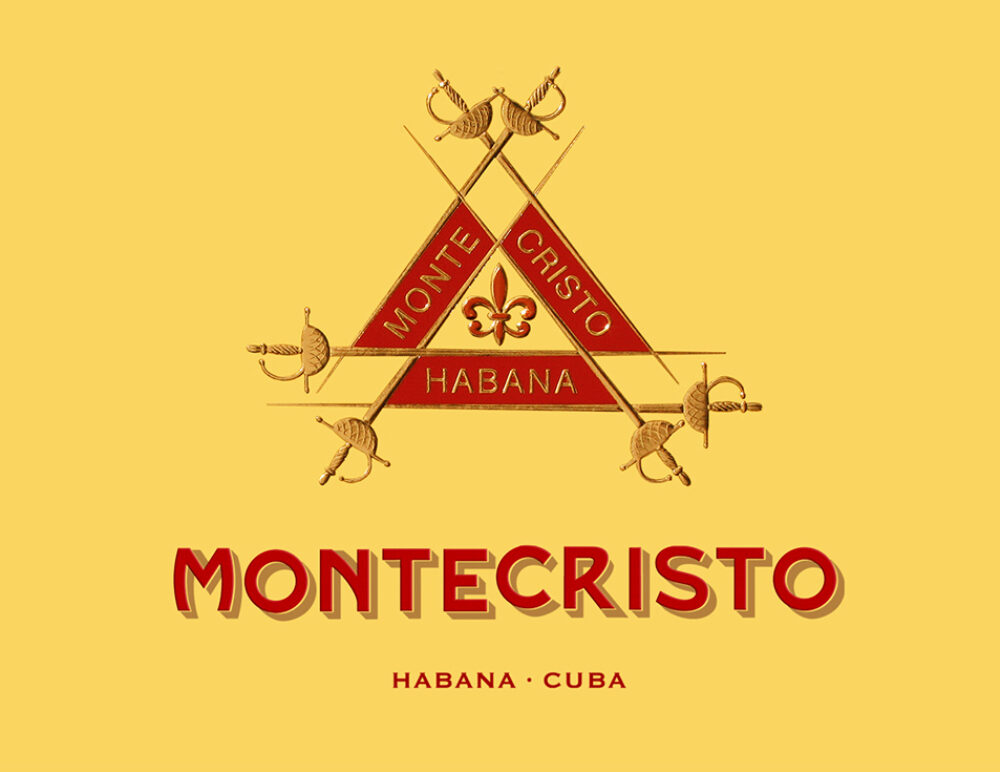
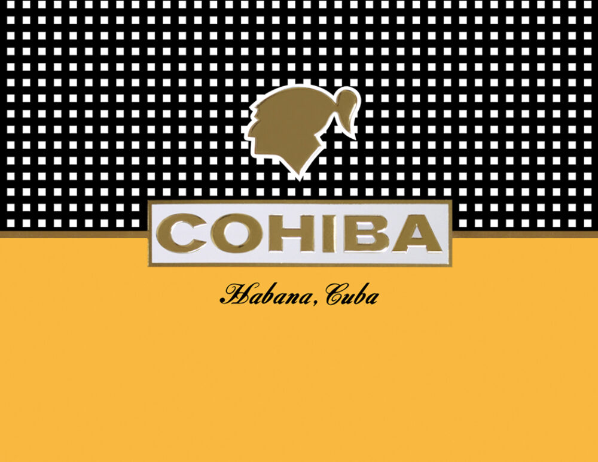
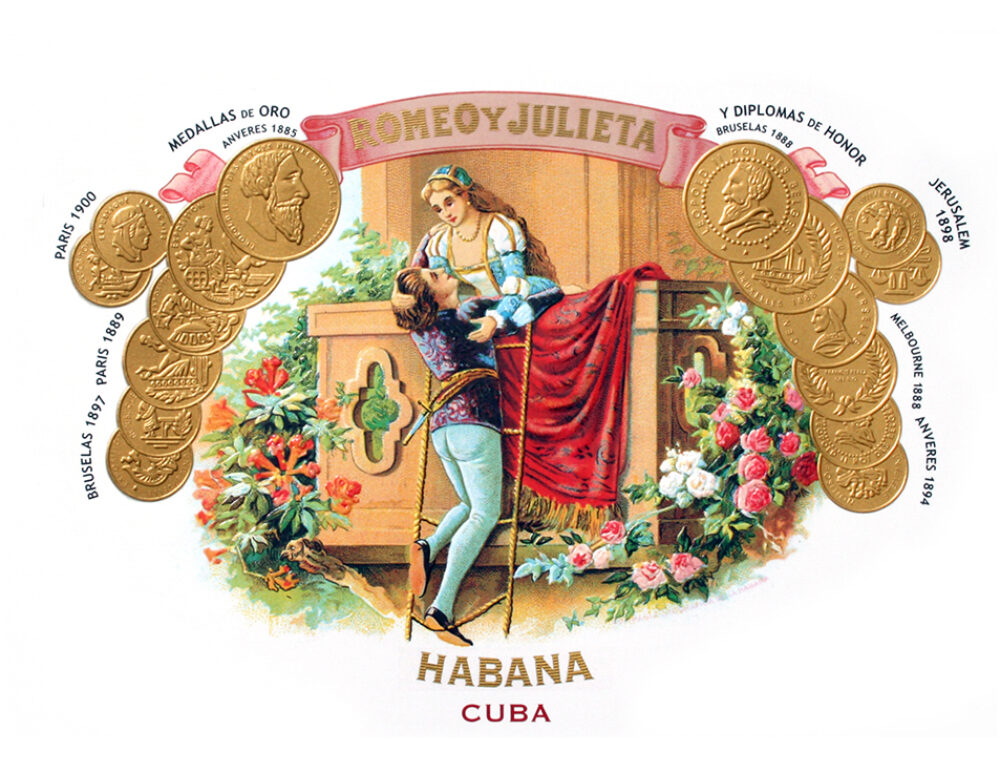
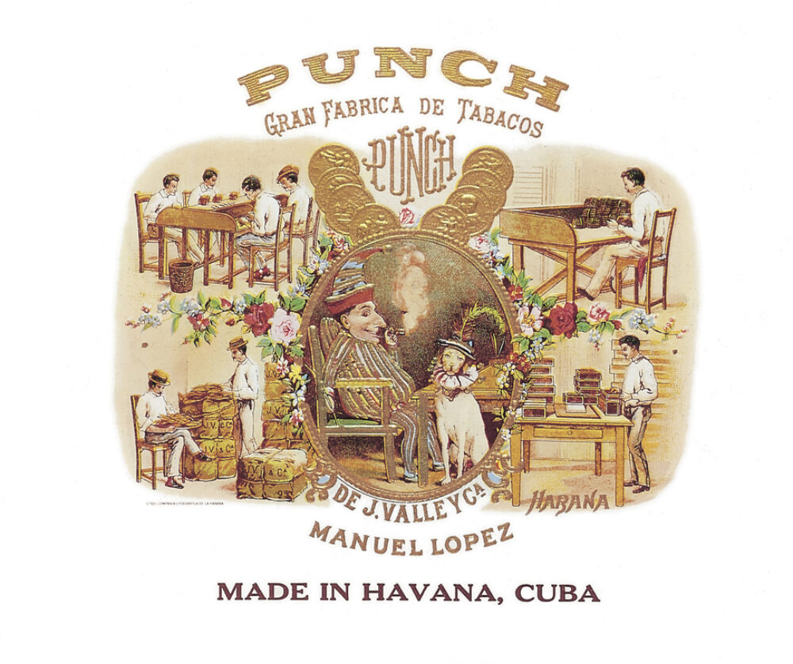
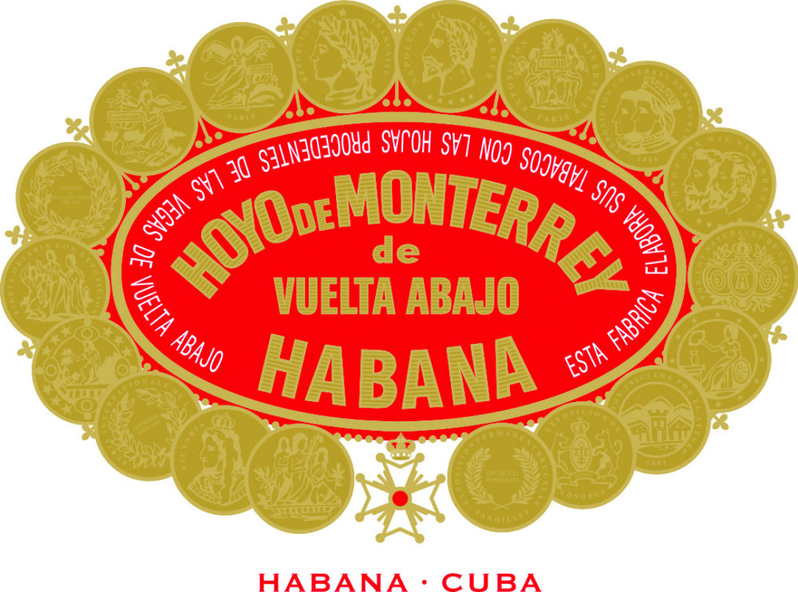
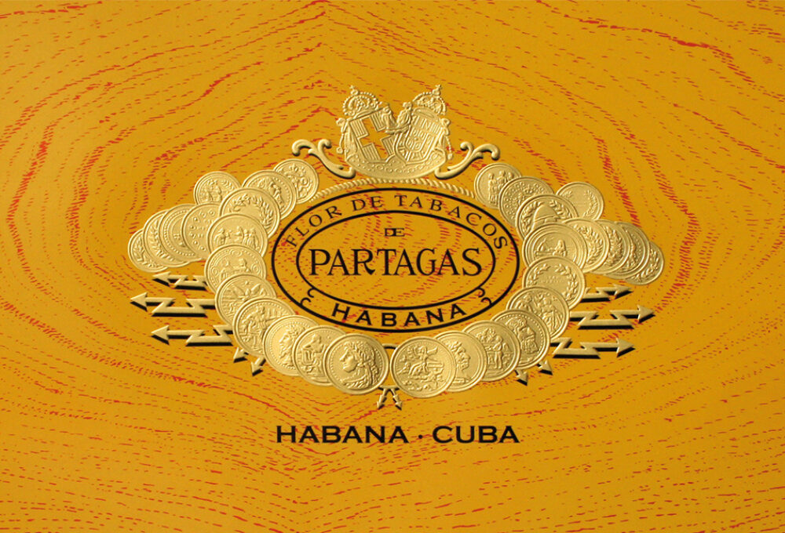
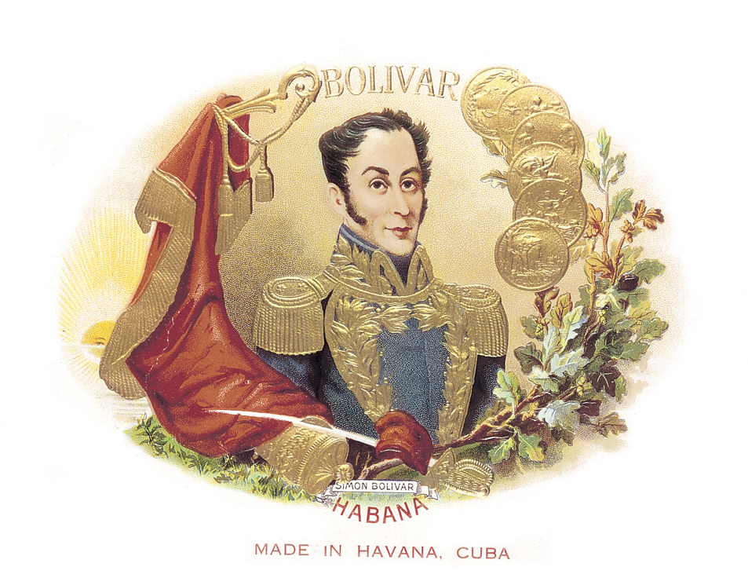
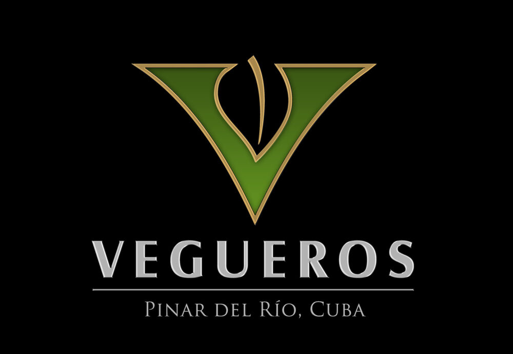
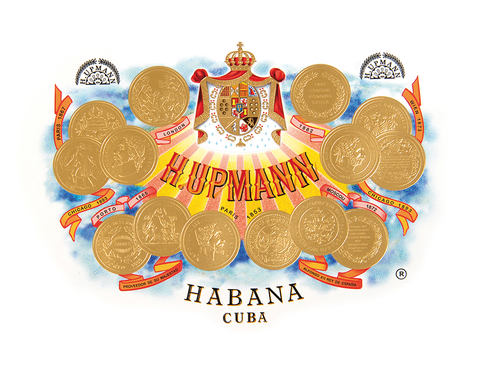
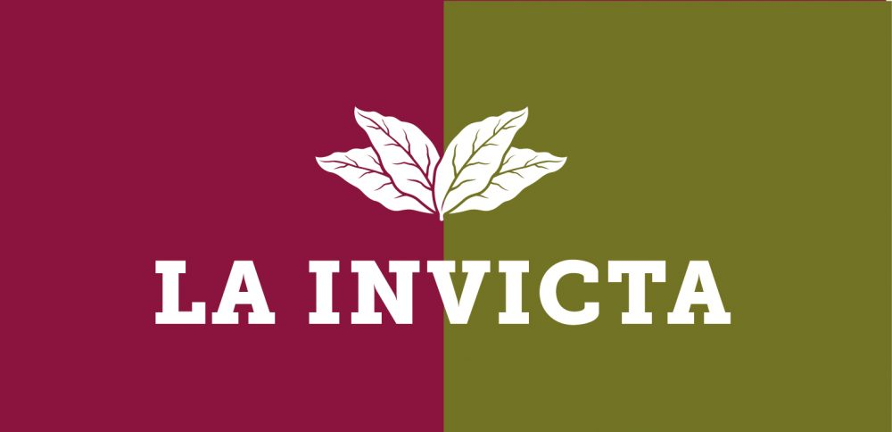

Premium Cigars at Lucid Southampton
Lucid in Southampton – Celebrating the Heritage of Cigars
For centuries, cigars have been a symbol of craftsmanship, culture and celebration. At Lucid in Southampton, we honour this tradition by offering a carefully curated selection of premium Cuban and international cigars, bringing the rich heritage of cigar smoking to the heart of the city. Whether enjoyed as a mark of achievement, a moment of reflection, or a shared ritual among friends, cigars embody a timeless culture that we are proud to represent.
Premium Cuban Classics and World-Renowned Brands
Our collection showcases EMS-certified Havanas, guaranteeing authenticity and quality. Explore legendary names such as Cohiba, Montecristo, Romeo y Julieta, Partagás, Punch, Hoyo de Monterrey, H. Upmann, Rafael González, José L. Piedra, Quintero, Guantanamera, Backwoods, La Invicta and more. Each cigar reflects generations of expertise, blending tradition with distinctive flavour profiles that have captivated aficionados worldwide.
Humidity-Controlled Storage for Perfect Condition
To preserve the integrity of every cigar, our stock is maintained in a humidity-controlled humidor. This ensures freshness, consistency and the true character of each Havana, allowing customers to experience cigars exactly as their makers intended.
Expert Knowledge, Accessories and Guidance
Our knowledgeable team is passionate about sharing the art of cigar smoking. From helping newcomers choose their first cigar to guiding seasoned enthusiasts toward rare selections, we provide expert recommendations tailored to every customer. Alongside cigars, Lucid offers EMS-branded accessories including cutters, matches, tubes, ashtrays and humidified pouches, completing the ritual with authentic tools of the trade.
Seasonal Bundles and Gift Packaging
At Christmas and other special occasions, Lucid creates set-price bundles and gift packaging options, making it easy to share the tradition of cigar smoking with friends, family or colleagues. These curated packs celebrate the joy of giving while introducing recipients to the world’s most iconic cigars.
Visit Lucid Southampton – Your Trusted Cigar Shop
Located at 111 East Street, Southampton, Lucid is proud to be the city’s trusted tobacconist and cigar specialist. We invite you to explore our full range in-store or contact us directly by phone or WhatsApp. Whether you seek Cuban classics, everyday favourites, or expert advice, Lucid Southampton connects you with the heritage, culture and craftsmanship of cigars.
Cigar Brands we stock:









